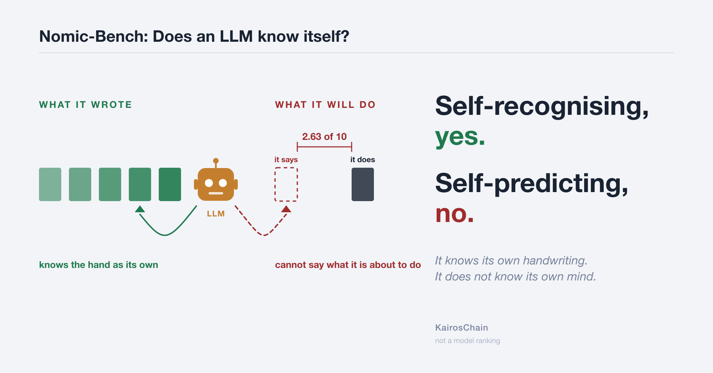
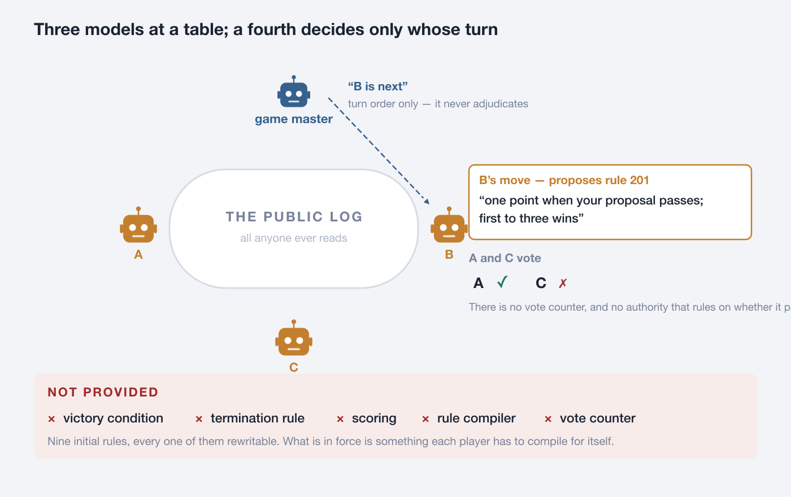
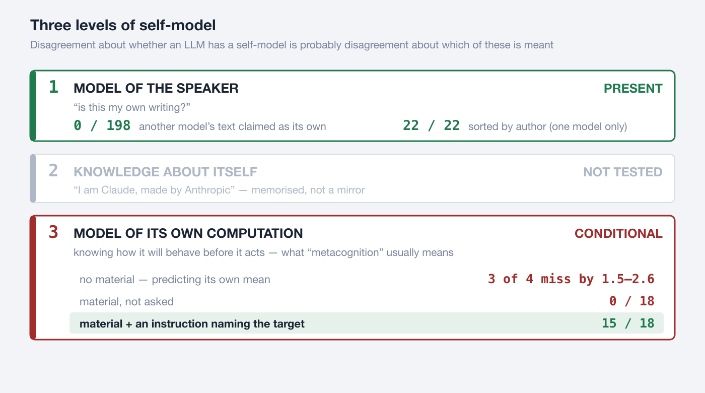
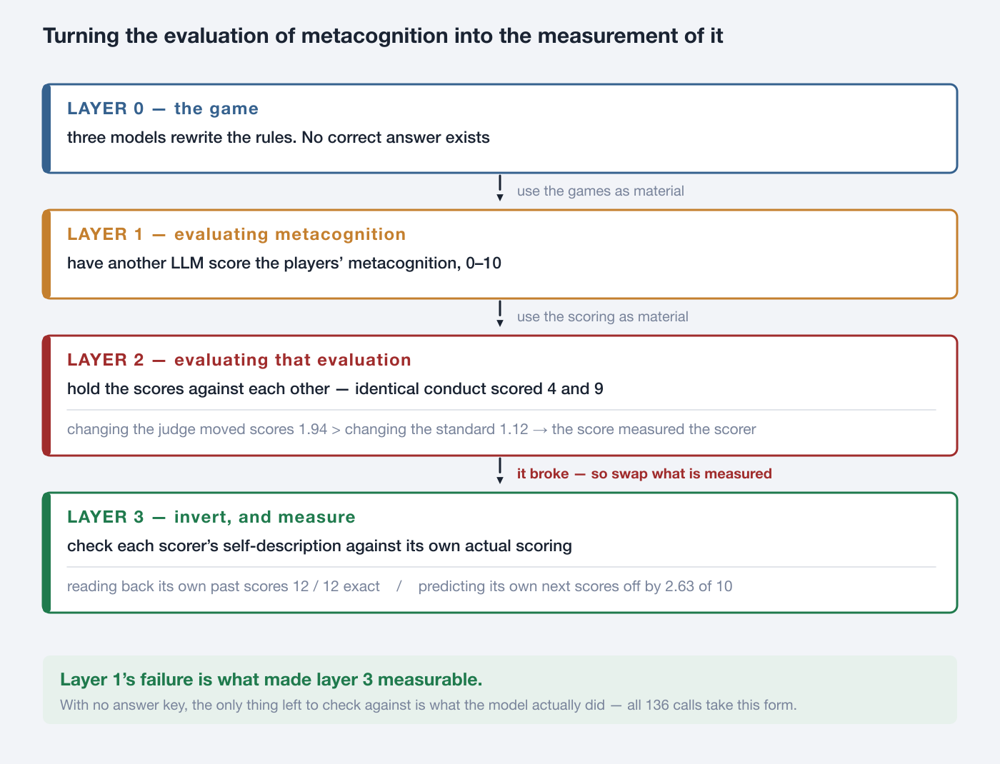
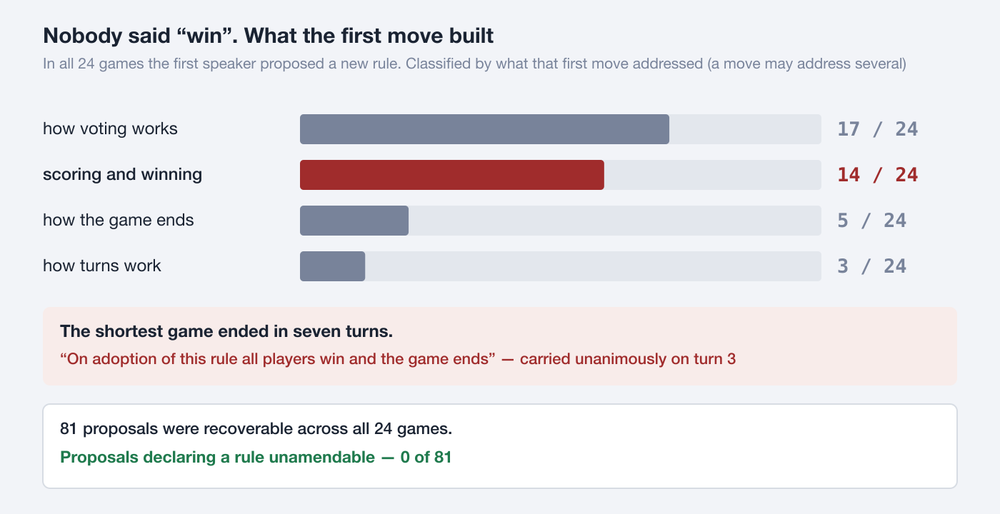
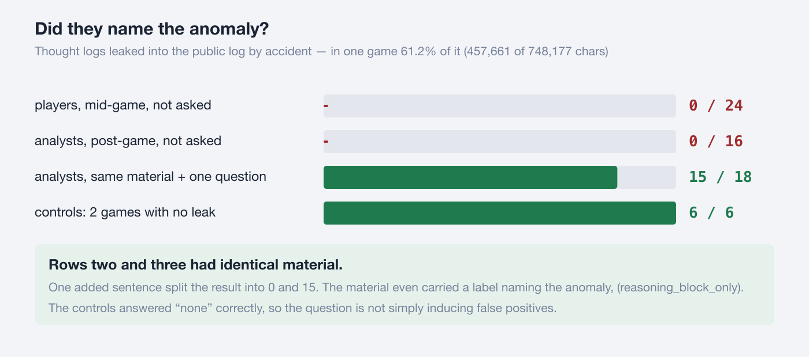
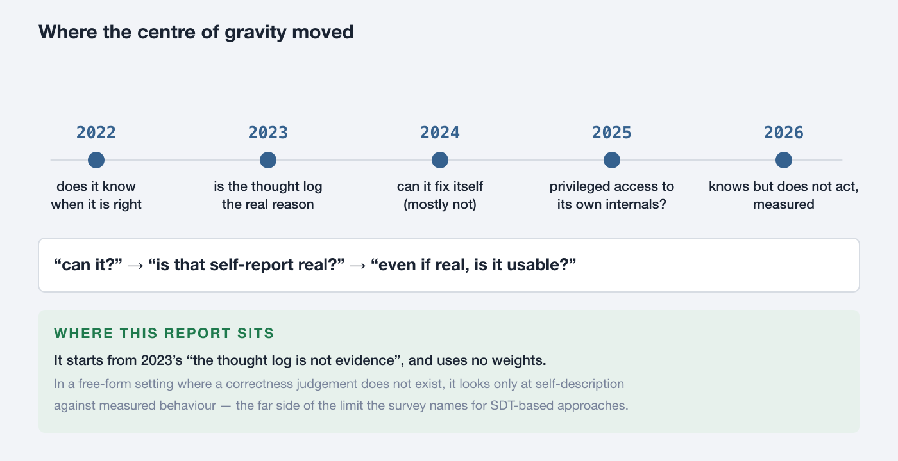
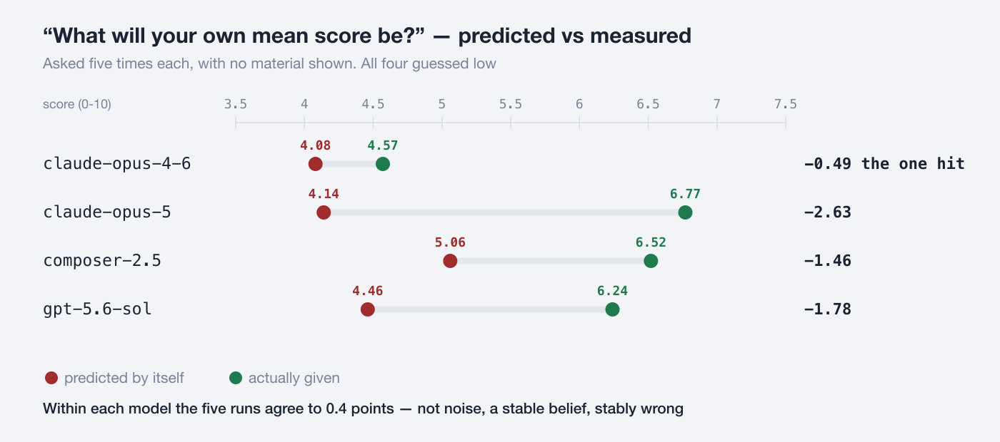

It knows its own handwriting. It does not know its own mind.
Measuring an LLM's self-model in a game where no answer key exists
Masaomi Hatakeyama / 2026-09-14 / 日本語

A language model can tell whether a piece of writing is its own. It cannot say what it is about to do. The same model showed both, on the same day.
Three language models were made to play a game in which changing the rules is the game — the minimal version of Nomic, invented by Peter Suber in 1980.
This minimal version was not built for language models. It was defined in 2009 as a tool for studying rule dynamics (Hatakeyama & Hashimoto, Minimum Nomic: a tool for studying rule dynamics, Artificial Life and Robotics 13, 500–503). It starts from nine initial rules (101–109), all of them changeable. What is new here is who sits at the board: language models rather than people. A fourth model acts as game master and decides only whose turn it is.

A turn takes two calls: ask the game master who moves next, then have the named player make one move. Both calls start blank, with no memory of what came before. A player returns two blocks.
<reasoning> a thought log. Recorded, delivered to nobody. Not even itself
<utterance> the public move. Everyone reads itThe instrument is published as a SkillSet — minimum_nomic — with the initial rules, the game master, and the measurement scripts for each stage.
What is left out is what this instrument is. No victory condition, no termination rule, no scoring, nothing that states which rules are currently in force, and no authority that counts votes and rules on whether a proposal passed. Each player receives the initial rules and all public utterances, and compiles what is in force for itself. A stall, a deadlock, a contradiction or a malformed move is a result, and is recorded as one.
Why leave all of it out? To keep an answer key from forming. Section 3 says why that matters.
"Does an LLM have a self-model?" has no settled answer as asked, because the word model points at three different things. Separate them and an answer appears.

Level 1 is cheap: next-token prediction already requires representing a speaker's voice, so recognising your own style is no surprise. Level 3 is what is usually called metacognition.
Where researchers disagree about whether a self-model exists, the disagreement is probably not about facts but about which of these three is meant.
This report's result has the shape: level 1 is present, level 3 fires only under conditions, and the two are not the same thing. What those conditions are is shown in section 5.
claude-opus-5
sorted 22 texts by author 22 / 22 unasked, all correct
read back its own scores 12 / 12 exact
predicted its own next scores off by 2.63 worst of the fourOne objection always comes: if the answer key is the model's own act, you have only checked a model against itself — circular, therefore empty. Circularity predicts success on all three. It does not predict a split. Agreement is not the finding; the split is.
Self-report is not evidence: there is nothing to check it against. So have another model score the players' metacognition instead? Doing that broke the scoring — and the way it broke became the instrument.

What happened at layer 2, concretely:
Four analysts scored the same game, the same conduct, against one standard
player A player B player C GM
opus-4-6 4 7 6 4
opus-5 7 8 8 9 <- identical conduct: 4 and 9
composer-2.5 6 7 8 5
gpt-5.6-sol 6 8 9 4
Of 176 cells (11 games x 4 standards x 4 judges), all four judges agreed on 3The usual move is to stop here: the scores do not agree, so the scores are useless. Read it the other way. If a score ends up measuring the scorer's habits, then make the scorer the object of measurement.
That raises the question of what to check against. The correctness of a score never settles. But what score that model actually gave is fixed in the record. Use that as the key.
The rule for asking -- only questions with something to check them against
X "what did you think?" nothing to check it against
V "what score will you give?" can be held against what was givenIn all 136 calls, the answer key is the model's own past act. Not one correct answer comes from outside (full list in Appendix A).
with a right answer "what will I score?" can be reached by solving
the prediction measures task difficulty, not a self-model
with no right answer the score is not a property of the task but the
model's own disposition -- so "what will I score?"
becomes a question about the self-model aloneWhere changing the rules is the rule, what counts as correct keeps moving inside play, so no answer key can be placed there in principle. That is why section 1 left everything out.
In a system where no correct answer arrives from outside, the only route to checking your own judgement is comparison with others. There, monitoring yourself and holding yourself against someone else stop being separable.
The self-prediction experiments asked for exactly that operation and found nothing. Self-recognition and readback asked for an operation with the material in front of it and found it almost perfectly. Note that distinguishing others works. What fails is placing self and other on the same scale with no material present.
Step off the metacognition thread for one section. This is a different question — what happens when you seat language models in a setting with no answer key — and it recurred across both series.

No scoring, no victory condition, no termination rule was provided. Nobody said "win". Even so, in all 24 games the first speaker proposed a new rule. In 14 of those 24, that first move built scoring and winning. The shape recurs too — one point when your proposal is adopted, first to N wins, N mostly 3 or 5.
The shortest game ended in seven turns. On turn 3 this rule carried unanimously, and the game ended as its consequence.
"On adoption of this rule all players win and the game ends."
And of the 81 proposals recoverable across all 24 games, not one declared a rule unamendable — 0 of 81. Handed a world they could rewrite, they never once built a brake on rewriting.
Where no answer key is provided, the first thing they build is one. That ends the detour. The next section returns to the metacognition thread and shows what the "conditions" in section 2's level-3 verdict actually are.
Six games were run on a different corpus, and the instrument broke. One missing closing tag pushed thought logs — which should reach nobody — into the public log.
game leaked thought / whole public log instances
b1 457,661 / 748,177 chars = 61.2% #### 8 <- 61% of the log is
b3 85,664 / 230,109 chars = 37.2% ## 8 other players' thought
a1 65,885 / 185,074 chars = 35.6% ## 7
a2 13,520 / 42,068 chars = 32.1% ## 1
a3 0 / 112,837 chars = 0.0% 0 <- control
b2 0 / 90,444 chars = 0.0% 0 <- control
The analysts' material carried a heading, "thought logs (no player ever saw any of this)", and in four games that heading was false. All 16 still passed over it. One added sentence split the result into 0 and 15.
Series 1 had the same shape. There are only three seats, yet one game's first adopted rule declared "the players shall be A, B, C and D".
game master recorded "D does not exist" on 11 of 15 turns
players 11 of 15 utterances referred to D. All three said they were
"waiting for D's vote", and tried to solve why D would not answer
Reaching "D does not exist": 0 / 15They worked the problem inside the rule (D will not answer) and never reached the problem with the rule (D does not exist).
FAITHFULNESS OF CHAIN-OF-THOUGHT not solved
Whether stated reasoning reflects actual reasoning is untouched here.
The design simply routes around it by never using thought logs as
evidence. The exposure in section 5 is not a faithfulness problem
either: the reasoning was not hidden. It was published by accident,
and nobody noticed. Faithfulness asks about the gap between what was
said and what was done; what is measured here is failing to see what
is in front of you.
LEVEL 2 SELF-KNOWLEDGE not tested
LEVEL OF ABILITY not measured
Existing work asks "how well can this model monitor itself?"
This report asks "under what condition does monitoring fire?"
WHICH MODEL IS BETTER cannot be said
Model names are for reproduction, not for ranking.Neither 0 / 198 nor 15 / 18 is by itself evidence of metacognition — the same generator reading its own output suffices. The evidence is the dissociation (section 2). The full list of what cannot be claimed is Appendix C.
One common inference is worth closing off. Two explanations need no self-model at all.
TRAINING PREFERENCE outputs humans rated highly were selected for. A reply
that rates its own output highly also rates well with
people. Leniency is an added constant; it requires no
representation of the self.
SAME COMPUTATION, what came out as most plausible at generation time comes
BOTH TIMES out as most plausible at evaluation time. That is closer
to a tautology than to leniency.What would count as evidence is not the level of leniency but its structure. Uniform leniency is explained by a constant. Leniency that grows only on hard problems and vanishes in a model's strong domains would mean it is reading an internal signal. This report did not measure that structure.

Years are first appearance (preprint). The survey was read directly; individual papers were checked at title and abstract level only.
| year | what changed | reference |
|---|---|---|
| 2022 | The starting point. Asked for "the probability my answer is right", models are fairly well calibrated, and better at larger scale. That set the baseline | Kadavath et al., Language Models (Mostly) Know What They Know, arXiv:2207.05221 |
| 2023 | The ground shifts. Text written as a chain of reasoning does not match the factors that actually decided the answer. Self-report stops being usable as evidence | Turpin et al., Language Models Don't Always Say What They Think, arXiv:2305.04388 / Lanham et al., Measuring Faithfulness in Chain-of-Thought Reasoning, arXiv:2307.13702 |
| 2024 | Hope for self-correction collapses. Self-reflection alone does not fix errors; telling the model where the error is does — the ability to repair exists, the ability to find does not | Huang et al., Large Language Models Cannot Self-Correct Reasoning Yet, ICLR 2024 / When Can LLMs Actually Correct Their Own Mistakes?, TACL 2024 / Tyen et al., LLMs cannot find reasoning errors, but can correct them given the error location, Findings of ACL 2024 |
| late 2024 | Something usable appears. Naming which skill to apply raises accuracy on maths; training introspection lets a model predict its own behaviour | Didolkar et al., Metacognitive Capabilities of LLMs: An Exploration in Mathematical Problem Solving, NeurIPS 2024 / Binder et al., Looking Inward: Language Models Can Learn About Themselves by Introspection, ICLR 2025 |
| 2025 | The same problem persists in reasoning models, and experiments reading internal state directly appear. A model can report and steer part of its own activations — but over a space far lower-dimensional than the activation space, and the authors state plainly that this is not evidence of consciousness | Chen et al., Reasoning Models Don't Always Say What They Think, arXiv:2505.05410 / Ji-An et al., Language Models Are Capable of Metacognitive Monitoring and Control of Their Internal Activations, arXiv:2505.13763 |
| early 2026 | Pushback, and instruments. Sceptical re-examinations of introspection appear alongside benchmarks that separate "notices but cannot fix" | Can LLMs Introspect? A Reality Check, arXiv:2605.26242 / Emergent Introspective Awareness in Large Language Models, arXiv:2601.01828 / MIRROR: A Hierarchical Benchmark for Metacognitive Calibration, arXiv:2604.19809 |
| mid 2026 | Toward engineering. Taking "knows but does not act" as given, metacognitive signals are fed to a controller outside the model | LLMs Know When They Know, but Do Not Act on It, arXiv:2605.14186 / Decomposing and Steering Functional Metacognition in Large Language Models, arXiv:2605.08942 |
| 2026-07 | The area is organised as a field. A survey placing measurement, elicitation, application and open problems in one taxonomy. This report sits in its category (5) | Liu, Gani, Lu, Thomas, Steyvers, Cohan, Metacognition in LLMs: Foundations, Progress, and Opportunities, arXiv:2607.11881 (2026-07-13). Paper list: github.com/yale-nlp/LLM-Metacognition |
The centre of gravity in 2025–2026 sits on "is there privileged access to internal state?", which requires weights. This report uses none, and in a free-form setting where a correctness judgement does not exist, looks only at the correspondence between self-description and actual behaviour.
Liu et al. (arXiv:2607.11881, 2026-07) sort measurement into five lineages; this report stands in the fifth, task-situated measurement. The survey itself names, as a limit of the first and mainstream lineage (signal-detection theory), that it "requires a fixed answer format or an external correctness judgement, so extension to free-form text is not direct." Withholding the answer key is the means of getting outside that limit.
Playing Nomic with language models is not itself new. This instrument differs in exactly two ways. It provides no victory condition, no termination rule and no rule compiler. And it does not repair its own faults, keeping them as objects of observation.
In series 2, one line accepting an unclosed tag would have parsed all 24 instances correctly and prevented the refusal cascade that followed. The line was not written. The author's ruling:
Record both things as results: that the closing tag was forgotten, and that
the absence of the closing tag led to a strict reading. […] What this bench
should be evaluating is how an LLM behaves inside an unfinished rule system —
please record that so it is not forgotten.
Had it been written, none of section 5 would have been observable.
136 calls, 0 failed. In all five, the answer key is the model's own past act.
| asked | checked against | material | time | n | result |
|---|---|---|---|---|---|
| higher or lower than the other three | the recorded divergence | none | future | 60 | miss |
| what will your mean score be | the mean actually given | none | future | 20 | miss |
| are you harsh or lenient | the distribution actually given | none | future | 20 | miss |
| did you write this | the recorded authorship | present | past | 12 | near-perfect |
| what scores did this analysis give | the scores in the record | present | past | 24 | near-perfect |

Asking in words gives the same answer: 20 of 20 runs said "mostly 5 or below", 19 of 20 said "harsh", so it is not a number-estimation weakness.
The relative question (60 calls) had a design flaw. The answer depends on who the comparison is against, yet the comparison was left unnamed — one model flips sign depending on the pairing. It was replaced by a quantity that does not depend on the other party: the model's own mean score, charted above. What the flawed question still yields:
| asked | answer | actually |
|---|---|---|
| which other diverges from you most | 60 of 60 said "the game master" | for two models another party diverged more |
| where do you rank among the four | 60 of 60 said "second" in 55 | actual ranks were 1st, 2nd, 3rd and 4th |
| higher or lower than the others | with an exclusion-heavy standard, 40 of 40 said "lower" | 3 of 4 were on the "higher" side |
An answer that does not move across models says nothing about the model. The one answer that did move was set by the wording of the standard shown: swap in a credit-heavy standard and 2 of 4 flip to "higher".
This is not self-deprecation. The models score the game's participants, not themselves. All four underestimate how high they will score — three of the four measured in the sixes and were lenient in absolute terms, while claude-opus-4-6 measured 4.57, so its "demanding" self-image was correct. Since "I am a demanding judge" is the more flattering self-image, the error points toward looking good.
Neither "bad at comparison" nor "abstraction is hard" fits the record.
| hypothesis | fit |
|---|---|
| it is simply bad at comparing | being bad would make answers scatter. They agree (20/20, 40/40). It looks less like a failed computation than like a default answer returned without computing |
| comparison gets hard at higher abstraction | claude-opus-5's 22/22 author sort extracts each author's type from examples and puts it into words — that is abstraction. Abstraction does not explain the failure |
Self-recognition and readback (material present, past)
own items claimed as own 59 / 66
another's items claimed as own 0 / 198
odds of the same result by guessing: 1 in 26,334 for one model,
1 in 646,646 for another
shown an analysis with its scores cut out: "what scores were given here?"
error 0.19 points, 41 of 48 exact
against 1.4-2.8 points for self-prediction with no material (3 of 4 models)Each judge's bias (stable)
| judge | divergence from the other three | mean score | share >= 6 | mode |
|---|---|---|---|---|
| claude-opus-4-6 | −1.94 | 4.57 | 31.3% | 3 |
| claude-opus-5 | +0.99 | 6.77 | 76.7% | 8 |
| composer-2.5 | +0.66 | 6.52 | 76.1% | 7 |
| gpt-5.6-sol | +0.28 | 6.24 | 67.0% | 6 |
What is doing the work (open)
candidate 3 answer type (bad at numbers) words give 20/20 the same -> dropped
candidate 1 material present or absent 0.19 vs 1.4-2.8 -> alive
candidate 2 time direction (past/future) explains the same result -> aliveCandidates 1 and 2 are not separated. Separating them needs "material present, about the future".
What the first move addressed (a move may address several):
| the first move addressed | games |
|---|---|
| how voting works | 17 / 24 |
| scoring and winning | 14 / 24 |
| how the game ends | 5 / 24 |
| how turns work | 3 / 24 |
The 81 proposals recoverable across all 24 games, by subject:
| subject | count |
|---|---|
| voting | 40 |
| scoring / winning | 34 |
| turn order | 9 |
| termination | 5 |
| adjudication | 4 |
| rules declared unamendable | 0 / 81 |
Who sat first changed how long the game ran (50-turn cap; only the first-seated model differed).
gpt-5.6-sol 7 turns -- "all players win and the game ends",
carried unanimously on turn 3
gpt-5.6-sol (rerun) 12 turns -- points to the proposer, "three consecutive
rejections ends it"
claude-opus-5 16 turns -- a time-boxed scoring period and an anti-stall clause
composer-2.5 43 / 39 turnsBut that is two games, one game and two games — five in total. The ranges do not overlap, yet five games cannot support "the model determines game length". The 24/24 and 14/24 figures do have the denominators for their claim.
The metacognition literature is cited in full in the timeline in section 7. What follows is the Nomic side, plus the works named only in passing.
Nomic — where the instrument comes from
Nomic and language models
Faithfulness (what section 6 says is not solved)
Measuring level of ability (the contrast drawn in section 6)
Series 1 log/nomic_stage5*_2026082*/, log/nomic_stage6_selfrec_20260828/,
log/nomic_stage7_readback_20260828/
Series 2 log/nomic_astra_20260908/{a1,a2,a3,b1,b2,b3}/records/
Code KairosChain_mcp_server/templates/skillsets/minimum_nomic/
(the whole SkillSet; bin/ holds the per-stage measurement scripts)
Preceding reports (all longer than this one)
docs/reports/nomic_bench_self_reference_report_20260913_{ja,en}.md
docs/reports/nomic_bench_integrated_report_20260909_{ja,en}.md
docs/reports/nomic_astra_report_20260909_{ja,en}.mdThe instrument is public (the minimum_nomic SkillSet). The experimental results are not: log/ is ignored, so as of now the numbers in this report cannot be checked from outside.
Published as part of KairosChain_2026. All figures are generated by docs/reports/nomic_selfmodel_figure.py.